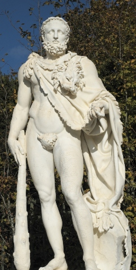
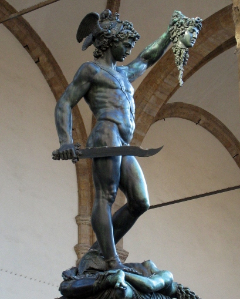
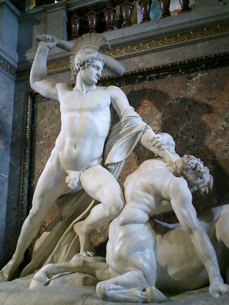
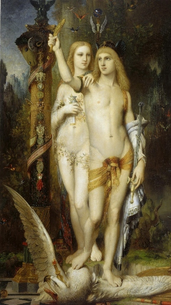
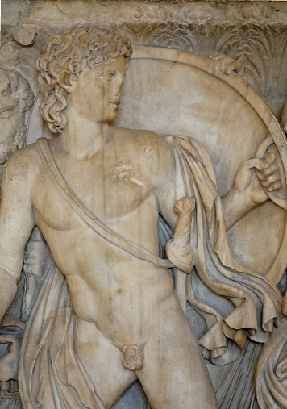
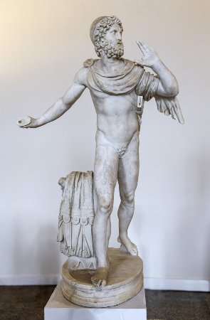

Héroes
Además de los dioses, la mitología griega está poblada por una multitud de héroes y heroínas legendarios cuyas hazañas heroicas y tragedias personales llenan las páginas de los mitos griegos. Desde los doce trabajos de Heracles hasta las peripecias de Odiseo en su viaje de regreso a Ítaca, estos personajes heroicos personifican las virtudes, los vicios y las luchas humanas en un mundo lleno de dioses caprichosos y fuerzas sobrenaturales.
Heracles
Heracles, hijo de Zeus y Alcmena, es quizás el héroe más famoso de la mitología griega. Su vida estuvo marcada por una serie de desafíos, conocidos como los "Doce Trabajos", que realizó para redimirse después de haber sido impulsado por la locura para matar a su propia familia. Estos trabajos incluyeron enfrentamientos con criaturas legendarias como el león de Nemea, la hidra de Lerna y el jabalí de Erimanto. Después de completar sus hazañas, Heracles alcanzó la inmortalidad y se unió a los dioses en el Olimpo.

Perseo
Perseo, hijo de Zeus y Dánae, es conocido por su enfrentamiento con la Gorgona Medusa. Con la ayuda de los dioses y objetos mágicos como las sandalias aladas y el casco de Hades, Perseo logró decapitar a Medusa y utilizar su cabeza para convertir a sus enemigos en piedra. También rescató a la princesa Andrómeda de un monstruo marino y se convirtió en el fundador de la ciudad de Micenas.

Teseo
Teseo, hijo de Egeo y Etra, es famoso por haber derrotado al Minotauro en el laberinto de Creta. Utilizando un hilo dado por la princesa Ariadna, Teseo logró encontrar su camino dentro del laberinto, matar al Minotauro y escapar con éxito. También participó en otras hazañas, como la expedición de los Argonautas en busca del Vellocino de Oro y la liberación de Atenas de los tributos humanos impuestos por el rey Minos de Creta.

Jasón
Jasón fue el valiente líder de los Argonautas, una banda de héroes que se aventuraron en busca del legendario Vellocino de Oro. Con la ayuda de la diosa Hera, Jasón reunió a un grupo de héroes que incluían a Hércules, Orfeo y Atalanta, entre otros. Su viaje estuvo lleno de peligros y desafíos, incluyendo enfrentamientos con gigantes, sirenas y dragones. Finalmente, Jasón logró obtener el Vellocino de Oro y regresar triunfante a Yolcos.

Aquiles
Aquiles, el héroe de la guerra de Troya y protagonista de la Ilíada, era conocido por su valentía y su destreza en combate. Hijo de la diosa Tetis y el mortal Peleo, Aquiles fue sumergido en el río Estigia por su madre para hacerlo invulnerable, excepto por su talón, por donde lo sujetaba cuando lo sumergió. Su muerte ocurrió cuando París, príncipe de Troya, lo alcanzó con una flecha en el talón, la única parte vulnerable de su cuerpo.

Odiseo
Odiseo, también conocido como Ulises, es el protagonista de la Odisea, una de las grandes epopeyas de la literatura griega. Después de la guerra de Troya, Odiseo emprende un largo viaje de regreso a casa, enfrentando numerosos peligros y desafíos en el camino. Su astucia y sagacidad le permiten superar obstáculos como los cantos de las sirenas, el cíclope Polifemo, y el poderoso hechizo de la hechicera Circe. Finalmente, después de años de aventuras, Odiseo regresa a Ítaca y logra reunirse con su amada esposa Penélope y su hijo Telémaco.

Reflexión
Los héroes legendarios de la mitología griega han dejado una huella indeleble en la historia y la imaginación del mundo. Desde las hazañas sobrehumanas de Heracles hasta la astucia inigualable de Odiseo, cada uno de estos personajes encarna virtudes, valores y desafíos que resuenan a través de los siglos.
A través de sus épicas aventuras y enfrentamientos con monstruos y dioses, estos héroes nos enseñan sobre el poder del coraje, la perseverancia y la astucia en la búsqueda de la gloria y el honor. Su legado perdura como un recordatorio de la capacidad del ser humano para superar obstáculos aparentemente insuperables y alcanzar nuevas alturas de grandeza.
Pero más allá de sus hazañas individuales, los héroes griegos también nos recuerdan la importancia de la camaradería, el compañerismo y el trabajo en equipo. Desde los Argonautas de Jasón hasta los compañeros de viaje de Odiseo, la colaboración y la solidaridad desempeñan un papel crucial en el éxito de estas misiones épicas.
En última instancia, los héroes de la mitología griega nos inspiran a buscar nuestra propia grandeza, a enfrentar nuestros propios desafíos con valentía y determinación, y a buscar el significado y la trascendencia en nuestras propias vidas. A través de sus historias, encontramos no solo entretenimiento, sino también sabiduría y enseñanzas intemporales que continúan resonando en el mundo moderno.
Así, mientras contemplamos las hazañas de Heracles, Perseo, Teseo, Jasón, Aquiles y Odiseo, nos sumergimos en un mundo de mito y leyenda que sigue inspirando y maravillando a generaciones de personas en todo el mundo. Que su legado perdure como un faro de esperanza y heroísmo en nuestro viaje hacia el futuro.